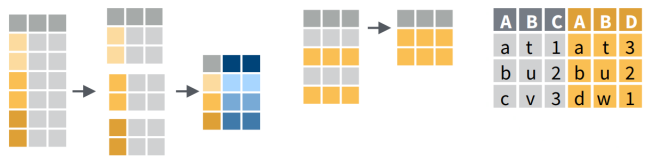

Working with 2D Data

An alternative way to manipulate or ‘munge’ data frames.
Part of the tidyverse.
Best way to learn: examples + cheat sheet.
The key to making this easier is the use of piping syntax.
fun_a() %>% fun_b() %>% fun_c() %>% …
Piping allows the results of one function to be passed as the first argument of the next function. This allows a series of commands to be written like a sentence.
fun_a(x, ...) %>% fun_b(x, ...) %>% fun_c(x, ...) %>%* ...
│ ↑ │ ↑
└───────────┘ └───────────┘
| select column(s) | select() |
| select rows | filter() |
| order rows | arrange() |
| add new columns | mutate() |
| join data frames | left_join(), right_join(), inner_join() |
select(), filter(), and arrange() are common function names that exist in other packages. To avoid errors:
Preface them with dplyr::
or
Set your preferences using the conflicted package:
Column names when used as arguments in dplyr functions should not be in quotes.
iris %>% filter(Sepal.Length > 7) %>% mutate(width_length = Sepal.Width * Sepal.Length)
│ │ │
│ │ └─ create a new column
│ │
│ ├─ select those rows where Sepal.Length > 7
│ └─ don't have to specify the data frame
│
└ start with this data frame
Result:
## Sepal.Length Sepal.Width Petal.Length Petal.Width Species widthxlength
## 1 7.1 3.0 5.9 2.1 virginica 21.30
## 2 7.6 3.0 6.6 2.1 virginica 22.80
## 3 7.3 2.9 6.3 1.8 virginica 21.17
## 4 7.2 3.6 6.1 2.5 virginica 25.92
## 5 7.7 3.8 6.7 2.2 virginica 29.26
## 6 7.7 2.6 6.9 2.3 virginica 20.02
## 7 7.7 2.8 6.7 2.0 virginica 21.56
## 8 7.2 3.2 6.0 1.8 virginica 23.04
## 9 7.2 3.0 5.8 1.6 virginica 21.60
## 10 7.4 2.8 6.1 1.9 virginica 20.72
## 11 7.9 3.8 6.4 2.0 virginica 30.02
## 12 7.7 3.0 6.1 2.3 virginica 23.10library(dplyr)
# Select rows where Sepal.Length > 7
iris %>% filter(Sepal.Length > 7)
# Select rows where Sepal.Length > 7 AND Species is virginica
iris %>% filter(Sepal.Length > 7, Species=="virginica")## Sepal.Length Sepal.Width Petal.Length Petal.Width Species
## 1 7.1 3.0 5.9 2.1 virginica
## 2 7.6 3.0 6.6 2.1 virginica
## 3 7.3 2.9 6.3 1.8 virginica
## 4 7.2 3.6 6.1 2.5 virginica
## 5 7.7 3.8 6.7 2.2 virginica
## 6 7.7 2.6 6.9 2.3 virginica
## 7 7.7 2.8 6.7 2.0 virginica
## 8 7.2 3.2 6.0 1.8 virginica
## 9 7.2 3.0 5.8 1.6 virginica
## 10 7.4 2.8 6.1 1.9 virginica
## 11 7.9 3.8 6.4 2.0 virginica
## 12 7.7 3.0 6.1 2.3 virginica
## Sepal.Length Sepal.Width Petal.Length Petal.Width Species
## 1 7.1 3.0 5.9 2.1 virginica
## 2 7.6 3.0 6.6 2.1 virginica
## 3 7.3 2.9 6.3 1.8 virginica
## 4 7.2 3.6 6.1 2.5 virginica
## 5 7.7 3.8 6.7 2.2 virginica
## 6 7.7 2.6 6.9 2.3 virginica
## 7 7.7 2.8 6.7 2.0 virginica
## 8 7.2 3.2 6.0 1.8 virginica
## 9 7.2 3.0 5.8 1.6 virginica
## 10 7.4 2.8 6.1 1.9 virginica
## 11 7.9 3.8 6.4 2.0 virginica
## 12 7.7 3.0 6.1 2.3 virginicaThe second example illustrates one way to filter rows using a compound expression.
You can also construct a compound filter expression using ‘&’ (and) and ‘|’ (or) operators.
Example:
This expression returns rows where Sepal.Length > 5.6 AND the Species is virginica OR setosa.
To filter rows based on row numbers (as opposed to an expression), use slice()
Let’s add some more functions to our dplyr expression to i) select only specific columns, and then ii) order the rows.
# Select rows where Sepal.Length > 7 AND Species is virginica, and just the columns
# for Species, Sepal.Lenth, and Sepal.Width
iris %>% filter(Sepal.Length > 7, Species=="virginica") %>%
select(Species, Sepal.Length, Sepal.Width)
# Finally, sort rows by Sepal.Length followed by Sepal.Width
iris %>% filter(Sepal.Length > 7, Species=="virginica") %>%
select(Species, Sepal.Length, Sepal.Width) %>%
arrange(Sepal.Length, Sepal.Width)## Species Sepal.Length Sepal.Width
## 1 virginica 7.1 3.0
## 2 virginica 7.6 3.0
## 3 virginica 7.3 2.9
## 4 virginica 7.2 3.6
## 5 virginica 7.7 3.8
## 6 virginica 7.7 2.6
## 7 virginica 7.7 2.8
## 8 virginica 7.2 3.2
## 9 virginica 7.2 3.0
## 10 virginica 7.4 2.8
## 11 virginica 7.9 3.8
## 12 virginica 7.7 3.0
## Species Sepal.Length Sepal.Width
## 1 virginica 7.1 3.0
## 2 virginica 7.2 3.0
## 3 virginica 7.2 3.2
## 4 virginica 7.2 3.6
## 5 virginica 7.3 2.9
## 6 virginica 7.4 2.8
## 7 virginica 7.6 3.0
## 8 virginica 7.7 2.6
## 9 virginica 7.7 2.8
## 10 virginica 7.7 3.0
## 11 virginica 7.7 3.8
## 12 virginica 7.9 3.8[Solution]
## Species Petal.Width
## 1 versicolor 1.0
## 2 versicolor 1.0
## 3 versicolor 1.0
## 4 versicolor 1.0
## 5 versicolor 1.0
## 6 versicolor 1.0
## 7 versicolor 1.0
## 8 versicolor 1.1
## 9 versicolor 1.1
## 10 versicolor 1.1
## 11 versicolor 1.2
## 12 versicolor 1.2
## 13 versicolor 1.2
## 14 versicolor 1.2
## 15 versicolor 1.2
## 16 versicolor 1.3
## 17 versicolor 1.3
## 18 versicolor 1.3
## 19 versicolor 1.3
## 20 versicolor 1.3
## 21 versicolor 1.3
## 22 versicolor 1.3
## 23 versicolor 1.3
## 24 versicolor 1.3
## 25 versicolor 1.3
## 26 versicolor 1.3
## 27 versicolor 1.3
## 28 versicolor 1.3
## 29 versicolor 1.4
## 30 versicolor 1.4
## 31 versicolor 1.4
## 32 versicolor 1.4
## 33 versicolor 1.4
## 34 versicolor 1.4
## 35 versicolor 1.4
## 36 versicolor 1.5
## 37 versicolor 1.5
## 38 versicolor 1.5
## 39 versicolor 1.5
## 40 versicolor 1.5
## 41 versicolor 1.5
## 42 versicolor 1.5
## 43 versicolor 1.5
## 44 versicolor 1.5
## 45 versicolor 1.5
## 46 versicolor 1.6
## 47 versicolor 1.6
## 48 versicolor 1.6
## 49 versicolor 1.7
## 50 versicolor 1.8[Hint] [Solution]
Look for a dplyr function on the data transformation cheat sheet that returns top values.
When passed regular data frames, dplyr functions return tibble objects, which are essentially data frames with a couple of minor tweaks.
ctrl + shift + m is the RStudio keyboard shortcut to insert: %>%
For more examples, see the dplyr Cheat Sheet
A common task in analysis is to group rows according to the values in a column, and then for each group of rows compute a statistic like mean, max, or count.
To do this in dplyr, use group_by() followed by summarise() or count().
# For each Species, compute the mean petal length and width
iris %>% group_by(Species) %>%
summarise(avg_petal_length = mean(Petal.Length), avg_petal_width = mean(Petal.Width))## # A tibble: 3 x 3
## Species avg_petal_length avg_petal_width
## * <fct> <dbl> <dbl>
## 1 setosa 1.46 0.246
## 2 versicolor 4.26 1.33
## 3 virginica 5.55 2.03For each species in iris, compute the minimum and maximum sepal length.
[Solution]
To join tables based on a common field, you can use:
left_join(x, y, by)
where x and y are data frames.
If the common column has the same name in both tables, that’s all you need. If not, you can add by which is a named character vector of the join column(s) (see below).
To illustrate, create a sample data frame with some additional fields for the different iris species.
## Create a data frame with additional info about the three IRIS species
iris_colors <- data.frame(Species=c("setosa", "versicolor", "virginica"),
num_genes = c(42000, 41000, 43000),
max_water = c(1.2, 1.4, 1.7))
iris_colors## Species num_genes max_water
## 1 setosa 42000 1.2
## 2 versicolor 41000 1.4
## 3 virginica 43000 1.7We can join these additional columns to the iris data frame (e.g., for a regression) with left_join():
## Joining, by = "Species"## Sepal.Length Sepal.Width Petal.Length Petal.Width Species num_genes max_water
## 1 5.1 3.5 1.4 0.2 setosa 42000 1.2
## 2 4.9 3.0 1.4 0.2 setosa 42000 1.2
## 3 4.7 3.2 1.3 0.2 setosa 42000 1.2
## 4 4.6 3.1 1.5 0.2 setosa 42000 1.2
## 5 5.0 3.6 1.4 0.2 setosa 42000 1.2If the join column is named differently in the two tables, then you have to include the ‘by’ argument.
For example if the join column was named ‘SpeciesName’ in x, and just ‘Species’ in y, your expression would be:
left_join(x, y, by = c(“SpeciesName” = “Species”))
If you need to join tables on multiple columns, add additional named character values to the by argument.
There are several variants of left_join(), the most common being right_join() and inner_join(). See help for details.
Today we saw:
Additional Resources